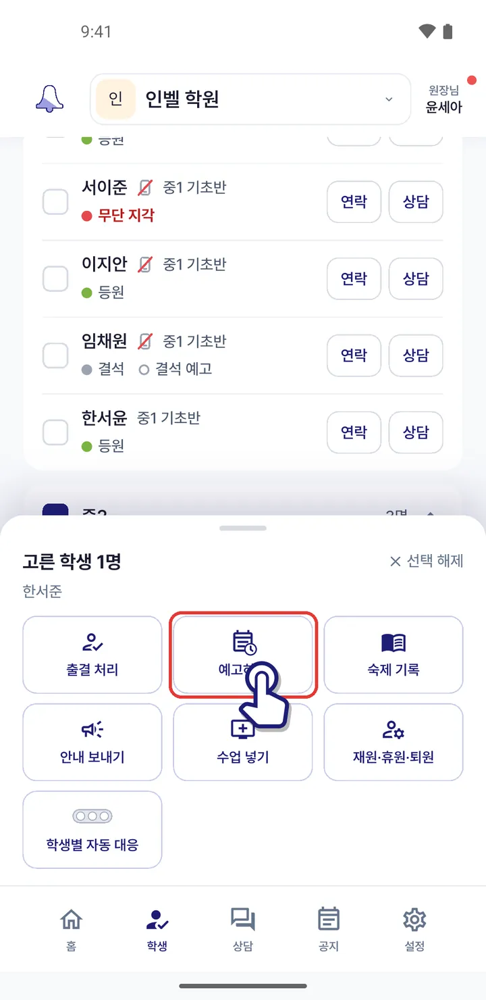
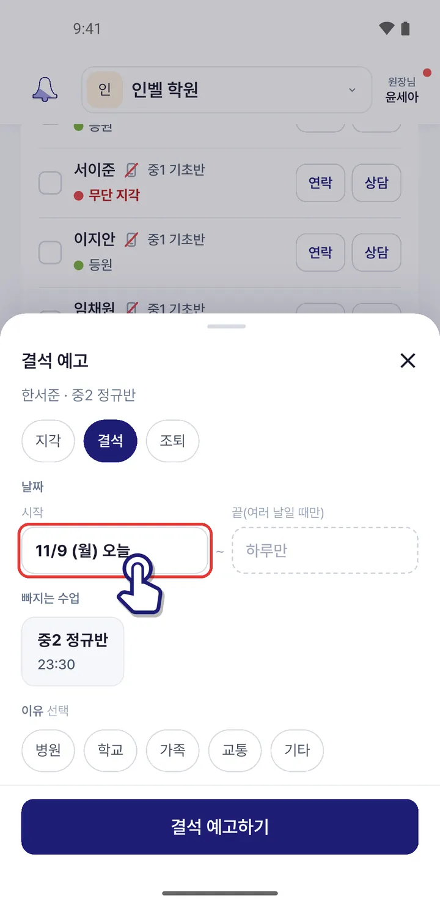
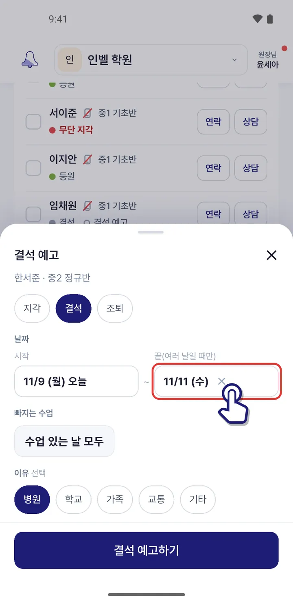
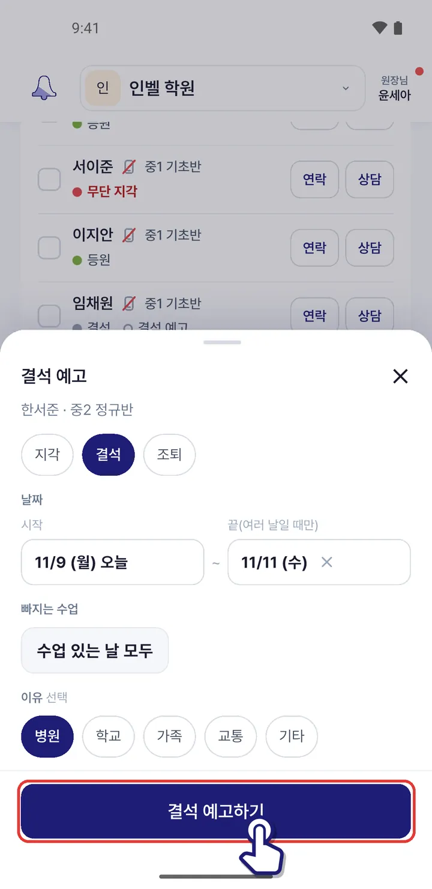
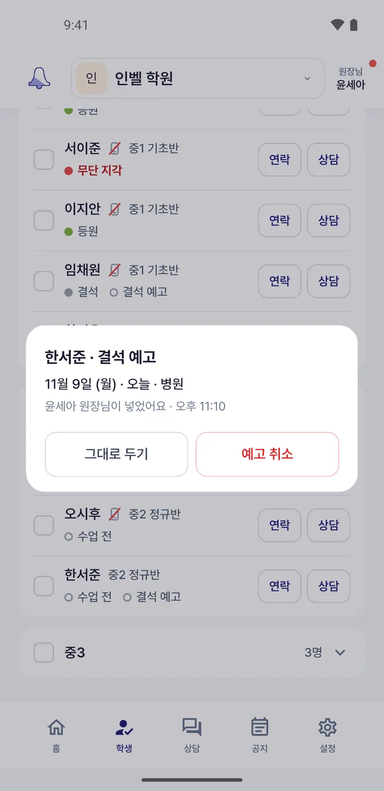

학부모 대신 결석 · 지각을 예고하고 싶어요
학부모님이 전화나 카톡으로 알려 오면 학생 탭에서 대신 예고해요. 그날은 지각 자동 대응이 쉬고, 학부모님께 알림이 가요.
1아래 「학생」 탭에서 예고할 학생 이름 앞 네모를 체크해요. 여러 명도 돼요.

2아래 판에서 「예고하기」를 눌러요.

3지각 · 결석 · 조퇴를 고르고 날짜를 정해요. 여러 날이면 「끝」을 눌러 마지막 날을 골라요.

4이유를 고르고(안 해도 돼요) 「결석 예고하기」를 누르면 끝이에요.

잘못 넣었으면 학생 줄의 「결석 예고」 꼬리표를 눌러 「예고 취소」를 누르면 돼요.

비슷한 상황
앱 1.0.72 화면 기준